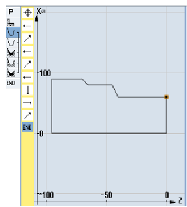
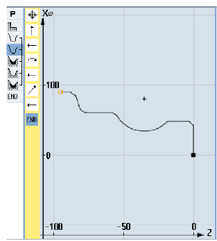

| 1. | Drücken Sie die Softkeys "Konturdrehen" und "Neue Kontur". Das Eingabefenster "Neue Kontur" wird geöffnet. |
| | 2. | Geben den Konturnamen (hier: Kont_1) ein. Die als NC-Code berechnete Kontur wird als internes Unterprogramm zwischen einer Anfangs- und einer Endmarke geschrieben, die den eingegebenen Konturnamen enthält. |
 | 3. | Drücken Sie den Softkey "Übernehmen". Das Eingabefenster "Startpunkt" wird geöffnet. |
| | 4. | Legen Sie den Startpunkt der Kontur an. |
| | | X | 60 | abs | Z | 0 | abs |
| | 5. | Drücken Sie den Softkey "Übernehmen". |
 | 6. | Geben Sie folgende Konturelemente ein und bestätigen Sie jeweils mit dem Softkey "Übernehmen". |
 | 6.1 | | Z | -40 | abs | | | |
| | 6.2 | | X | 80 | abs | Z | -45 | abs |
| | 6.3 | | Z | -65 | abs | | | |
| | 6.4 | | X | 90 | abs | Z | -70 | abs |
| | 6.5 | | Z | -95 | abs | | | |
 | 6.6 | | X | 0 | abs | | | |
| | 6.7 | | Z | 0 | abs | | | |
| | 6.8 | | X | 60 | abs | Z | 0 | abs |
| | 7. | Drücken Sie den Softkey "Übernehmen". Die Eingabe der Rohteilkontur ist nur erforderlich bei Verwendung eines vorgearbeiteten Rohteils. |
| | |  Rohteilkontur |
| | 1. | Drücken Sie die Softkeys "Konturdrehen" und "Neue Kontur". Das Eingabefenster "Neue Kontur" wird geöffnet. |
| | 2. | Geben Sie den Konturnamen (hier: Kont_2) ein. Die als NC-Code berechnete Kontur wird als internes Unterprogramm zwischen einer Anfangs- und einer Endmarke geschrieben, die den eingegebenen Konturnamen enthält. |
| | 3. | Drücken Sie den Softkey "Übernehmen". Das Eingabefenster "Startpunkt" wird geöffnet. |
| | 4. | Legen Sie den Startpunkt der Kontur fest. |
| | | X | 0 | abs | Z | 0 | abs |
| | 5. | Drücken Sie den Softkey "Übernehmen". |
| | 6. | Geben Sie folgende Konturelemente ein und bestätigen Sie jeweils mit dem Softkey "Übernehmen". |
| | 6.1 | X | 48 | abs | FS | 3 | |
| | 6.2 | α2 | 90° | | | | |
 | 6.3 | Drehrichtung |  |
| | | R | 23 | abs | X | 60 | abs | K | -35 | abs | I | 80 | abs |
| | | Eingabefelder sind danach inaktiv. |
| | 6.4 | Nehmen Sie mit den Softkey "Dialog Auswahl" die Auswahl eines gewünschten Konturelements vor und bestätigen Sie mit dem Softkey "Dialog Übernahme". Die Eingabefelder sind wieder aktiv. Geben Sie weitere Parameter ein. |
| | | FS | 2 | | | | | | | | |
| | 6.5 | Z | -80 | abs | R | 6 | | | | | |
| | 6.6 | X | 90 | abs | Z | -85 | abs | FS | 3 |
| | 6.7 | Z | -95 | abs | | | |
| | 7. | Drücken Sie den Softkey "Übernehmen". |
| | |  Fertigteilkontur |